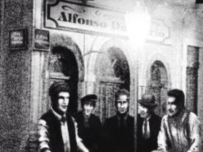
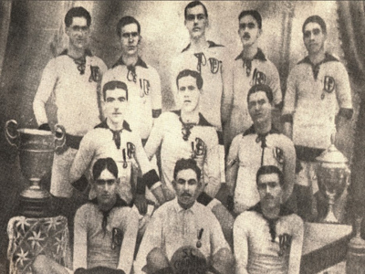
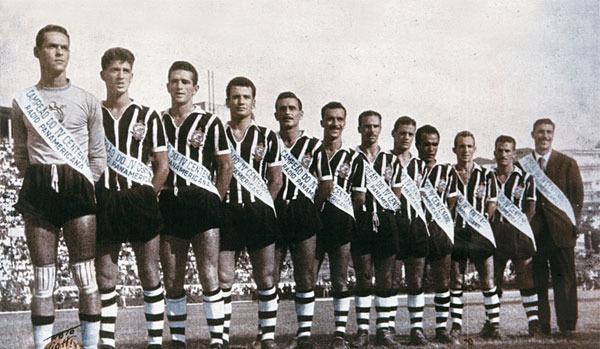
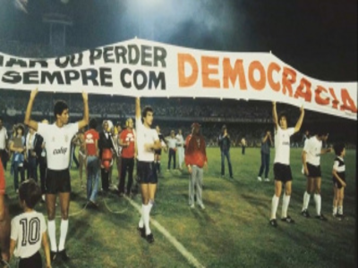
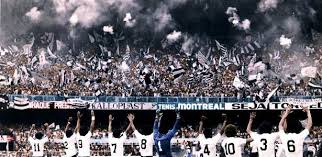
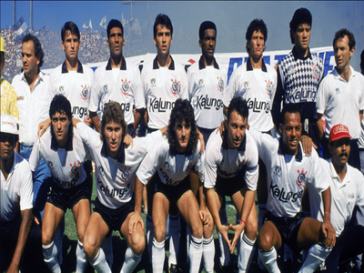
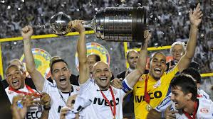
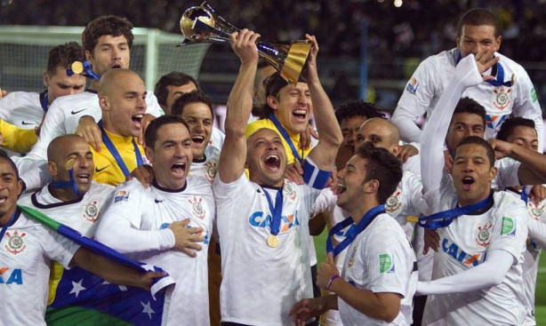
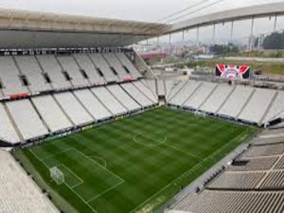
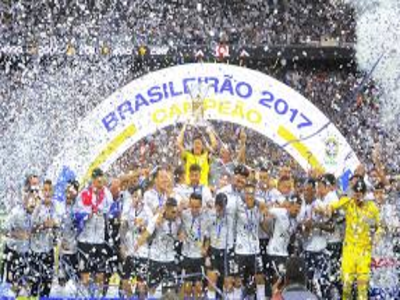

-

Cinco trabalhadores fundaram o Sport Club Corinthians Paulista.
Fundação em 1910 -

O Corinthians conquistou o Campeonato Paulista pela primeira vez.
Primeiro Título (1914) -

No ano do IV Centenário de São Paulo, venceu o Campeonato Paulista, o Torneio Rio-São Paulo e o Torneio Internacional Charles Miller.
Conquista da Tríplice Coroa (1954) -

Movimento liderado por Sócrates e outros jogadores, simbolizando liberdade em um período de ditadura militar.
Democracia Corinthiana (1982-1984) -

Torcida marcou presença histórica na semifinal do Campeonato Brasileiro contra o Fluminense.
A Invasão Corintiana no Maracanã (1976) -

O Corinthians venceu o São Paulo na final e conquistou seu primeiro título nacional.
Primeiro Campeonato Brasileiro (1990) -

Conquista inédita e invicta da Copa Libertadores da América, vencendo o Boca Juniors na final.
Título Invicto da Libertadores (2012) -

Primeiro título em 2000, no Mundial organizado pela FIFA, e o segundo em 2012, contra o Chelsea.
Bicampeonato Mundial (2000 e 2012) -

Estádio foi inaugurado, se tornando a casa oficial do clube.
A Construção da Neo Química Arena (2014) -

O Corinthians venceu seu sétimo título do Campeonato Brasileiro.
Heptacampeonato Brasileiro (2017)